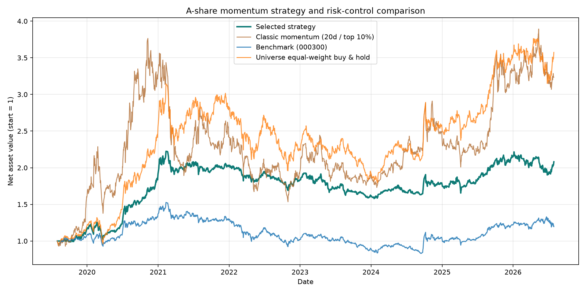
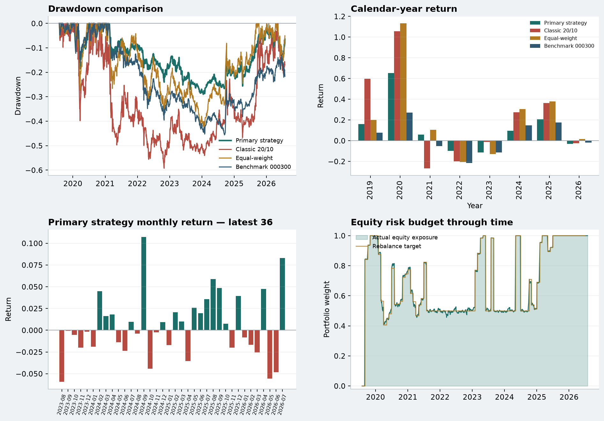

主策略最大回撤
-28.99%
越接近 0，历史峰值损失越小
A-SHARE QUANT RESEARCH · RISK BUDGET LEDGER
本次历史回测中，主策略最大回撤为 -28.99%，经典 20/10 动量为 -59.23%；回撤绝对值改善 +30.24 个百分点。
| 组合 | 总收益率 | 年化收益率 | 年化波动率 | 最大回撤 | 夏普 | Sortino | Calmar | 平均股票敞口 |
|---|---|---|---|---|---|---|---|---|
| 风控核心—卫星动量 | 108.10% | 11.02% | 15.67% | -28.99% | 0.75 | 1.06 | 0.38 | 69.18% |
| 经典动量（20 日 / 前 10%） | 223.39% | 18.23% | 37.09% | -59.23% | 0.64 | 0.95 | 0.31 | 100.00% |
| 股票池等权买入持有 | 257.39% | 19.93% | 25.68% | -43.01% | 0.84 | 1.23 | 0.46 | 100.00% |
| 沪深 300（000300） | 19.62% | 2.59% | 18.36% | -45.60% | 0.23 | 0.33 | 0.06 | 100.00% |


诊断图依次比较回撤路径、自然年度收益、主策略最近 36 个月收益，以及实际股票风险敞口。图形用于识别风险集中与时期依赖，不代表未来预测。
69.18% 股票 / 30.82% 现金
| 信号日 | 执行日 | 估计波动率 | 波动率上限 | 趋势状态 | 趋势上限 | 目标股票仓位 | 目标现金 |
|---|---|---|---|---|---|---|---|
| 2026-06-30 | 2026-07-01 | 16.80% | 100.00% | 均线上方 | 100.00% | 100.00% | 0.00% |
| 2026-05-29 | 2026-06-01 | 15.64% | 100.00% | 均线上方 | 100.00% | 100.00% | 0.00% |
| 2026-04-30 | 2026-05-06 | 16.65% | 100.00% | 均线上方 | 100.00% | 100.00% | 0.00% |
| 2026-03-31 | 2026-04-01 | 16.22% | 100.00% | 均线上方 | 100.00% | 100.00% | 0.00% |
| 2026-02-27 | 2026-03-02 | 14.50% | 100.00% | 均线上方 | 100.00% | 100.00% | 0.00% |
| 2026-01-30 | 2026-02-02 | 14.76% | 100.00% | 均线上方 | 100.00% | 100.00% | 0.00% |
| 2025-12-31 | 2026-01-05 | 15.99% | 100.00% | 均线上方 | 100.00% | 100.00% | 0.00% |
| 2025-11-28 | 2025-12-01 | 16.84% | 100.00% | 均线上方 | 100.00% | 100.00% | 0.00% |
| 2025-10-31 | 2025-11-03 | 15.76% | 100.00% | 均线上方 | 100.00% | 100.00% | 0.00% |
| 2025-09-30 | 2025-10-09 | 13.37% | 100.00% | 均线上方 | 100.00% | 100.00% | 0.00% |
| 2025-08-29 | 2025-09-01 | 11.50% | 100.00% | 均线上方 | 100.00% | 100.00% | 0.00% |
| 2025-07-31 | 2025-08-01 | 10.31% | 100.00% | 均线上方 | 100.00% | 100.00% | 0.00% |
表中上限均在月末信号日收盘后、仅使用当日及以前数据计算。目标仓位不超过 100%，系统不向上放大低波动组合；未投资部分按日收益 0 的现金处理。停牌冻结持仓可能令实际敞口短期偏离目标，因此同时保留目标与执行权重供审计。
| 区段 | 组合 | 区间 | 年化收益率 | 年化波动率 | 最大回撤 | 夏普 | Sortino |
|---|---|---|---|---|---|---|---|
| 开发期（回顾） | 风控核心—卫星动量 | 2019-08-01 至 2023-12-29 | 11.59% | 16.33% | -28.52% | 0.75 | 1.07 |
| 开发期（回顾） | 经典动量（20 日 / 前 10%） | 2019-08-01 至 2023-12-29 | 15.67% | 40.78% | -59.23% | 0.56 | 0.83 |
| 开发期（回顾） | 股票池等权买入持有 | 2019-08-01 至 2023-12-29 | 16.30% | 27.18% | -41.61% | 0.69 | 1.01 |
| 开发期（回顾） | 沪深 300（000300） | 2019-08-01 至 2023-12-29 | -2.30% | 18.27% | -43.22% | -0.04 | -0.05 |
| 时间留出期（回顾） | 风控核心—卫星动量 | 2024-01-02 至 2026-07-30 | 10.06% | 14.49% | -14.20% | 0.73 | 1.05 |
| 时间留出期（回顾） | 经典动量（20 日 / 前 10%） | 2024-01-02 至 2026-07-30 | 22.78% | 29.70% | -30.96% | 0.84 | 1.28 |
| 时间留出期（回顾） | 股票池等权买入持有 | 2024-01-02 至 2026-07-30 | 26.44% | 22.90% | -17.90% | 1.14 | 1.71 |
| 时间留出期（回顾） | 沪深 300（000300） | 2024-01-02 至 2026-07-30 | 11.58% | 18.51% | -15.66% | 0.68 | 1.02 |
temporal_holdout_diagnostic.csv 仅用于回顾性时间分段。项目此前已经查看过 2019—2026 全样本及参数敏感性，因此以 2024-01-01 切分不能宣传为真正样本外检验。真正的样本外证据需要在参数冻结后等待未来数据，或采用严格的滚动 walk-forward 流程。| 时期 | 组合 | 区间 | 年化收益率 | 年化波动率 | 最大回撤 | 夏普比率 |
|---|---|---|---|---|---|---|
| 全样本 | 风控核心—卫星动量 | 2019-08-01 至 2026-07-30 | 11.02% | 15.67% | -28.99% | 0.75 |
| 全样本 | 经典动量（20 日 / 前 10%） | 2019-08-01 至 2026-07-30 | 18.23% | 37.09% | -59.23% | 0.64 |
| 全样本 | 沪深 300（000300） | 2019-08-01 至 2026-07-30 | 2.59% | 18.36% | -45.60% | 0.23 |
| 全样本 | 股票池等权买入持有 | 2019-08-01 至 2026-07-30 | 19.93% | 25.68% | -43.01% | 0.84 |
| 前半段 | 风控核心—卫星动量 | 2019-08-01 至 2023-02-01 | 20.53% | 17.28% | -24.03% | 1.17 |
| 前半段 | 经典动量（20 日 / 前 10%） | 2019-08-01 至 2023-02-01 | 26.47% | 44.03% | -59.23% | 0.75 |
| 前半段 | 沪深 300（000300） | 2019-08-01 至 2023-02-01 | 2.84% | 19.39% | -39.59% | 0.24 |
| 前半段 | 股票池等权买入持有 | 2019-08-01 至 2023-02-01 | 30.95% | 29.16% | -37.78% | 1.07 |
| 后半段 | 风控核心—卫星动量 | 2023-02-02 至 2026-07-30 | 2.26% | 13.87% | -17.58% | 0.23 |
| 后半段 | 经典动量（20 日 / 前 10%） | 2023-02-02 至 2026-07-30 | 10.53% | 28.52% | -30.96% | 0.49 |
| 后半段 | 沪深 300（000300） | 2023-02-02 至 2026-07-30 | 2.34% | 17.28% | -24.44% | 0.22 |
| 后半段 | 股票池等权买入持有 | 2023-02-02 至 2026-07-30 | 9.84% | 21.65% | -29.70% | 0.54 |
| 类型 | 观察期 | 选股比例 | 平均持股数 | 年化收益率 | 最大回撤 | 夏普比率 |
|---|---|---|---|---|---|---|
| 本次动量参数 | 120 | 30.00% | 6.0 | 23.96% | -38.28% | 0.93 |
| 纯动量对照参数 | 10 | 10.00% | 2.0 | 25.61% | -61.72% | 0.80 |
| 纯动量对照参数 | 10 | 20.00% | 4.0 | 26.26% | -48.03% | 0.92 |
| 纯动量对照参数 | 10 | 30.00% | 6.0 | 21.05% | -49.56% | 0.84 |
| 纯动量对照参数 | 20 | 10.00% | 2.0 | 17.69% | -59.23% | 0.62 |
| 纯动量对照参数 | 20 | 20.00% | 4.0 | 15.59% | -57.75% | 0.63 |
| 纯动量对照参数 | 20 | 30.00% | 6.0 | 15.82% | -52.13% | 0.69 |
| 纯动量对照参数 | 60 | 10.00% | 2.0 | 19.25% | -69.64% | 0.66 |
| 纯动量对照参数 | 60 | 20.00% | 4.0 | 11.51% | -64.61% | 0.52 |
| 纯动量对照参数 | 60 | 30.00% | 6.0 | 7.85% | -65.03% | 0.42 |
| 纯动量对照参数 | 120 | 10.00% | 2.0 | 11.37% | -61.20% | 0.47 |
| 纯动量对照参数 | 120 | 20.00% | 4.0 | 17.21% | -52.51% | 0.66 |
敏感性表检验的是纯动量观察期与选股比例，并不把每个风控开关再次网格搜索。这样可以减少用同一历史样本反复挑选风险参数造成的过拟合。
| 代码 | 排名 | 120 日动量 | 纯动量目标 | 核心—卫星目标 | 风控后目标 | 实际执行 |
|---|---|---|---|---|---|---|
| 002475 | 1 | 18.82% | 16.67% | 8.50% | 8.50% | 8.50% |
| 002415 | 2 | 18.42% | 16.67% | 8.50% | 8.50% | 8.50% |
| 300750 | 3 | 7.35% | 16.67% | 8.50% | 8.50% | 8.50% |
| 600030 | 4 | 1.66% | 16.67% | 8.50% | 8.50% | 8.50% |
| 000333 | 5 | 0.88% | 16.67% | 8.50% | 8.50% | 8.50% |
| 600900 | 6 | -3.60% | 16.67% | 8.50% | 8.50% | 8.50% |
该表列出动量卫星入选股票；等权核心还可能持有其他股票。新版日志并列保存纯动量、核心—卫星混合、风控缩放与真实执行权重。
| 代码 | 首个报价日 | 最后报价日 | 报价天数 | 缺失比例 | 最长连续缺失 |
|---|---|---|---|---|---|
| 600030 | 2019-01-10 | 2026-07-30 | 1824 | 0.71% | 6 |
| 000333 | 2019-01-02 | 2026-07-30 | 1826 | 0.60% | 10 |
| 600900 | 2019-01-02 | 2026-07-30 | 1826 | 0.60% | 10 |
| 000651 | 2019-01-02 | 2026-07-30 | 1831 | 0.33% | 5 |
| 601012 | 2019-01-02 | 2026-07-30 | 1831 | 0.33% | 6 |
| 601899 | 2019-01-02 | 2026-07-30 | 1833 | 0.22% | 4 |
| 002415 | 2019-01-02 | 2026-07-30 | 1835 | 0.11% | 2 |
| 000001 | 2019-01-02 | 2026-07-30 | 1837 | 0.00% | 0 |
| 000858 | 2019-01-02 | 2026-07-30 | 1837 | 0.00% | 0 |
| 300750 | 2019-01-02 | 2026-07-30 | 1837 | 0.00% | 0 |
| 002594 | 2019-01-02 | 2026-07-30 | 1837 | 0.00% | 0 |
| 002475 | 2019-01-02 | 2026-07-30 | 1837 | 0.00% | 0 |
| 600309 | 2019-01-02 | 2026-07-30 | 1837 | 0.00% | 0 |
| 600276 | 2019-01-02 | 2026-07-30 | 1837 | 0.00% | 0 |
| 600036 | 2019-01-02 | 2026-07-30 | 1837 | 0.00% | 0 |
| 600887 | 2019-01-02 | 2026-07-30 | 1837 | 0.00% | 0 |
| 600519 | 2019-01-02 | 2026-07-30 | 1837 | 0.00% | 0 |
| 601318 | 2019-01-02 | 2026-07-30 | 1837 | 0.00% | 0 |
| 601398 | 2019-01-02 | 2026-07-30 | 1837 | 0.00% | 0 |
| 601888 | 2019-01-02 | 2026-07-30 | 1837 | 0.00% | 0 |
缺失报价日使用上一笔有效收盘价估值，但该日禁止交易。价格缓存、失败代码、股票池与运行参数记录在 run_metadata.txt。